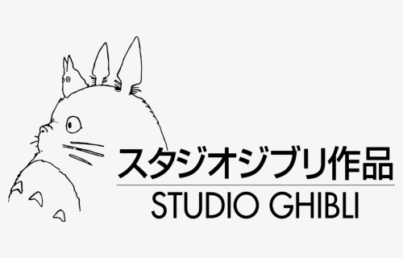

Lista Studio Ghibli filmova:
Studio Ghibli Inc. (Japanese: 株式会社スタジオジブリ, Hepburn: Kabushiki-gaisha Sutajio Jiburi) is a Japanese animation film studio headquartered in Koganei, Tokyo.[1] The studio is best known for its animated feature films, and has also produced several short films, television commercials, and one television film. The studio's mascot and most recognizable symbol is the character Totoro, a giant cat-like spirit from the studio's 1988 film My Neighbor Totoro. Studio Ghibli's highest grossing films include Spirited Away (2001), Ponyo (2008), and Howl's Moving Castle (2004).[2] The studio was founded on June 15, 1985 by directors Hayao Miyazaki and Isao Takahata and producer Toshio Suzuki, after the success of Topcraft's anime film Nausicaä of the Valley of the Wind (1984). Studio Ghibli has also collaborated with video game studios on the visual development of several video games.

Five of Studio Ghibli's films are among the 10 highest-grossing anime films made in Japan, with Spirited Away being number two, grossing over US$380 million worldwide. Many of their works have won the Animage Anime Grand Prix award, and four have won the Japan Academy Prize for Animation of the Year. Five of Studio Ghibli's films have received Academy Award nominations. Spirited Away won the Golden Bear in 2002 and the Academy Award for Best Animated Feature Film in 2003.[4]
On August 3, 2014, Studio Ghibli temporarily halted production, following the retirement of Miyazaki. In February 2017, Suzuki announced that Miyazaki had come out of retirement again to direct a new feature film, How Do You Live?.
Founded on June 15, 1985, the studio was headed by directors Hayao Miyazaki and Isao Takahata and producer Toshio Suzuki. Prior to the formation of the studio, Miyazaki and Takahata had already had long careers in Japanese film and television animation and had worked together on The Great Adventure of Horus, Prince of the Sun in 1968 and the Panda! Go, Panda! films in 1972 and 1973, and in 1978, Suzuki became an editor at Tokuma Shoten's Animage manga magazine, where the first film he chose was Horus. A year after his phone call with Takahata and his first encounter with Miyazaki, both about Horus, he made a phone call about the first film Miyazaki ever directed: The Castle of Cagliostro.
The studio was founded after the success of the 1984 film Nausicaä of the Valley of the Wind, written and directed by Miyazaki for Topcraft and distributed by Toei Company. The origins of the film lie in the first two volumes of a serialized manga written by Miyazaki for publication in Animage as a way of generating interest in an anime version.[6][7] Suzuki was part of the production team on the film and founded Studio Ghibli with Miyazaki, who also invited Takahata to join the new studio.
The studio has mainly produced films by Miyazaki, with the second most prolific director being Takahata (most notably with Grave of the Fireflies). Other directors who have worked with Studio Ghibli include Yoshifumi Kondō, Hiroyuki Morita, Gorō Miyazaki, and Hiromasa Yonebayashi. Composer Joe Hisaishi has provided the soundtracks for most of Miyazaki's Studio Ghibli films. In their book Anime Classics Zettai!, Brian Camp and Julie Davis made note of Michiyo Yasuda as "a mainstay of Studio Ghibli’s extraordinary design and production team".[8] At one time the studio was based in Kichijōji, Musashino, Tokyo.[9]
The studio has mainly produced films by Miyazaki, with the second most prolific director being Takahata (most notably with Grave of the Fireflies). Other directors who have worked with Studio Ghibli include Yoshifumi Kondō, Hiroyuki Morita, Gorō Miyazaki, and Hiromasa Yonebayashi. Composer Joe Hisaishi has provided the soundtracks for most of Miyazaki's Studio Ghibli films. In their book Anime Classics Zettai!, Brian Camp and Julie Davis made note of Michiyo Yasuda as "a mainstay of Studio Ghibli’s extraordinary design and production team".[8] At one time the studio was based in Kichijōji, Musashino, Tokyo.[9]
The studio has mainly produced films by Miyazaki, with the second most prolific director being Takahata (most notably with Grave of the Fireflies). Other directors who have worked with Studio Ghibli include Yoshifumi Kondō, Hiroyuki Morita, Gorō Miyazaki, and Hiromasa Yonebayashi. Composer Joe Hisaishi has provided the soundtracks for most of Miyazaki's Studio Ghibli films. In their book Anime Classics Zettai!, Brian Camp and Julie Davis made note of Michiyo Yasuda as "a mainstay of Studio Ghibli’s extraordinary design and production team".[8] At one time the studio was based in Kichijōji, Musashino, Tokyo.[9]